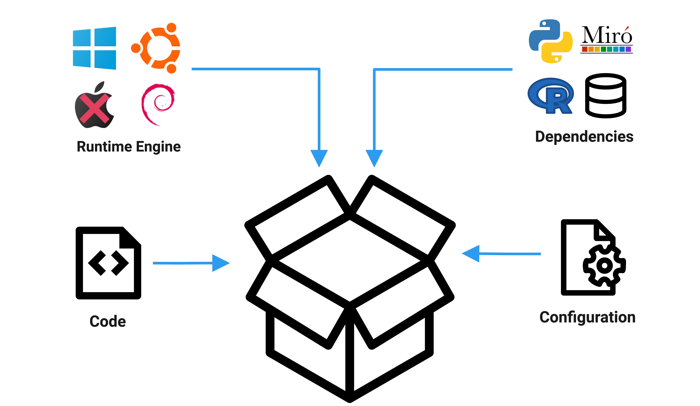

Docker Intro for Data Science
Paola Arce
Why Docker?
Infrastructure is as important as the code
What is Docker?
Docker is an open platform for developing, shipping, and running applications.
- Code runs in an isolated environment (container)
- Reduces the time of moving your code to a different machine